In MATCONT / CL_MATCONT there are four generic codim 2 bifurcations that can be detected along
a flip curve:
- Strong 1:2 resonance. We will denote this bifurcation with R2
- Fold - flip, Limit Point - Period Doublingor We will denote this bifurcation with LPPD
- Flip - Neimark-Sacker, denoted as PDNS
- Generalized period doubling point, denoted as GPD
To detect these singularities, we define 4 test functions:
where 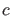 is the coefficient defined in (52),  is the monodromy matrix and is the bialternate product.
is the monodromy matrix and is the bialternate product.
The 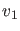's and 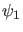's are obtained as follows. For a given
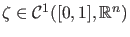 we consider three different discretizations:
-
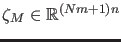 the vector of values in the mesh points,
-
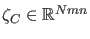 the vector of values in the collocation points,
-
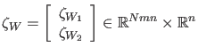 where 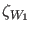 is the vector of values in the collocation points multiplied with the Gauss - Legendre weights and the lengths of the mesh intervals, and
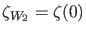.
Formally we further introduce 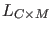 which is a structured sparse matrix that converts a vector 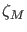 of values in the mesh points into a vector 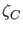 of values in the collocation points by
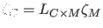.
We compute  by solving
by solving
The normalization of is done by requiring
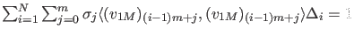 where  is the Gauss-Lagrange quadrature coefficient and 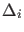 is the length of the i-th interval.
By discretization we obtain
is the Gauss-Lagrange quadrature coefficient and 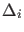 is the length of the i-th interval.
By discretization we obtain
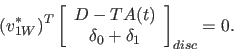
To normalize  we require
we require
 . Then
. Then
 is approximated by
is approximated by
 and if this quantity is nonzero,
and if this quantity is nonzero,  is rescaled so that
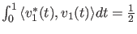. We compute 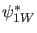 by solving
is rescaled so that
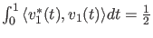. We compute 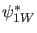 by solving
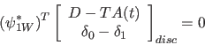
and normalize 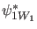 by requiring
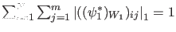. Then
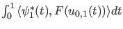 is approximated by
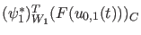 and if this quantity is nonzero,  is rescaled so that
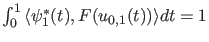.
is rescaled so that
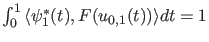.
 can be computed as
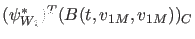.
The computation of 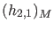 is done by solving
can be computed as
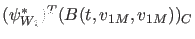.
The computation of 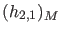 is done by solving
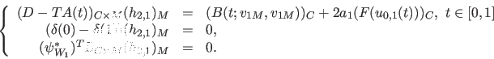
The expression for the normal form coefficient becomes
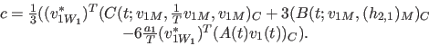
The singularity matrix is: